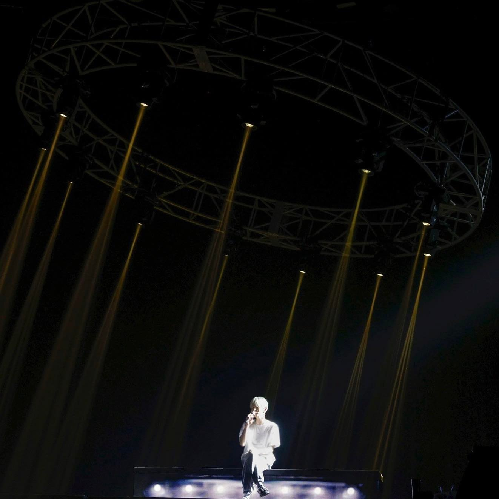

Posted on 25 November 2022
我相信夢境中發生的一切。
目前已做過預知夢、美夢、惡夢和奇怪的夢。
關於我做過的夢，只能說沒有什麼特別的，但過程都真實地使人害怕。 我喜歡體會夢境中的一切，並將所見記錄下來，忘記的部分則靠自己填補。久而久之，我發現我的夢境竟緊繫生活中的一切事項，這是多麼神奇且有趣。 我開始思考，難道這樣的過程會成真嗎？為了滿足自己的「實驗精神」，我嘗試在入睡前「製作」當晚的夢境，想看看明天是否會發生這些事，但每次不是沒有做夢，就是毫無關聯。夢境和現實原來也是不能強行聯繫的啊。
